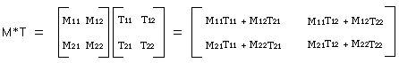
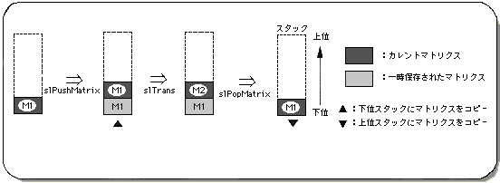
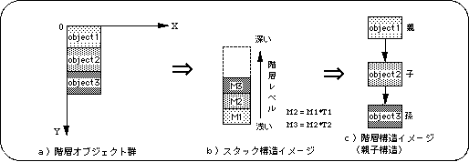
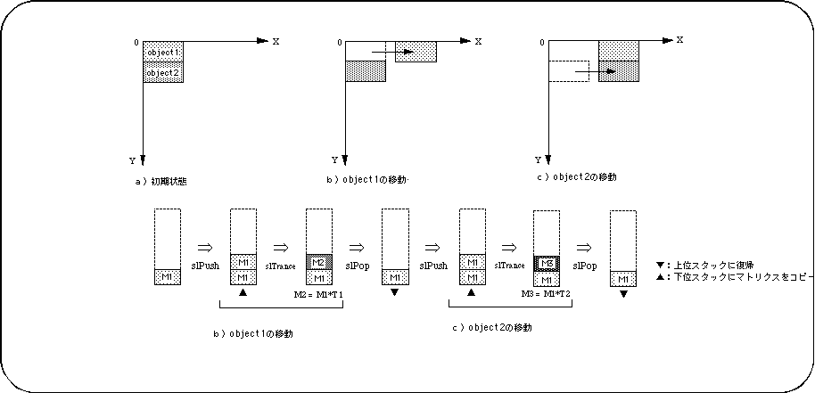
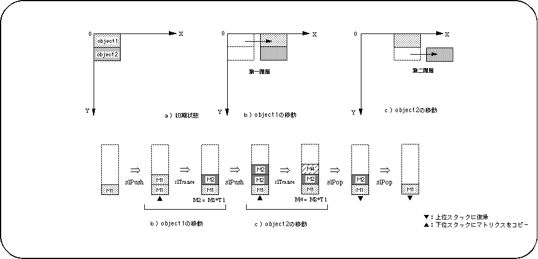
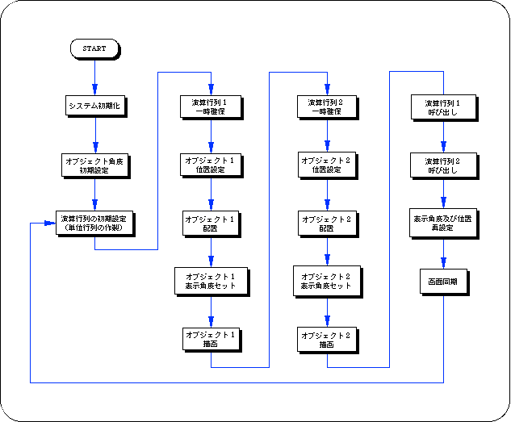

★SGL User's Manual
★PROGRAMMER'S TUTORIAL
★SGL User's Manual
★PROGRAMMER'S TUTORIAL
本章では、３Ｄグラフィックスを構築する際に基本となるマトリクスについて説明します。
前半ではマトリクス演算とその考え方を解説し、後半ではスタックマトリクスを用いた階層構造によるオブジェクトの構築を解説します。
特にマトリクスの階層構造は、セガサターンによる３Ｄグラフィックス表現において重要な要素となりますので、よく読んで理解してください。
マトリクスはｎ行×ｍ列の数字の群で、通常の数値演算とは異なりますが、行列同士の
四則演算も可能です（詳細は、専門書などを参考にしてください）。
下図は、２行×２列マトリクス同士の掛け算の例です。
ＳＧＬの場合、３Ｄ空間を正確に表現するために、マトリクス変数として４行×３列
マトリクスを用います（ＸＹＺ座標値及び各種変換操作を実現するため）。
＜図5-1 マトリクスの一般的な概念と演算例＞

“第4章 座標変換”で解説したモデリング変換も、実際はマトリクス として表されたポリゴン頂点データ列に各種変換マトリクス（回転、移動、スケールなど） を掛け合わせて、新しいポリゴン頂点データ列を作成したものです。
＜図5-2 スタックイメージモデル＞

＜図5-3 階層構造のイメージモデル＞

＜図5-4 階層構造を用いないオブジェクトの移動例＞

＜図5-5 階層構造を用いたオブジェクトの変換例＞

/*----------------------------------------------------------------------*/
/* Double Cube Circle Action */
/*----------------------------------------------------------------------*/
#include "sgl.h"
#define DISTANCE_R1 40
#define DISTANCE_R2 40
extern PDATA PD_CUBE;
static void set_star(ANGLE ang[XYZ] , FIXED pos[XYZ])
{
slTranslate(pos[X] , pos[Y] , pos[Z]);
slRotX(ang[X]);
slRotY(ang[Y]);
slRotZ(ang[Z]);
}
void ss_main(void)
{
static ANGLE ang1[XYZ] , ang2[XYZ];
static FIXED pos1[XYZ] , pos2[XYZ];
static ANGLE tmp = DEGtoANG(0.0);
slInitSystem(TV_320x224,NULL,1);
slPrint("Sample program 5.2" , slLocate(6,2));
ang1[X] = ang2[X] = DEGtoANG(30.0);
ang1[Y] = ang2[Y] = DEGtoANG(45.0);
ang1[Z] = ang2[Z] = DEGtoANG( 0.0);
pos2[X] = toFIXED(DISTANCE_R2);
pos2[Y] = toFIXED(0.0);
pos2[Z] = toFIXED(0.0);
while(-1){
slUnitMatrix(CURRENT);
slPushMatrix();
{
pos1[X] = DISTANCE_R1 * slSin(tmp);
pos1[Y] = toFIXED(30.0);
pos1[Z] = toFIXED(220.0) + DISTANCE_R1 * slCos(tmp);
set_star(ang1 , pos1);
slPutPolygon(&PD_CUBE);
slPushMatrix();
{
set_star(ang2 , pos2);
slPutPolygon(&PD_CUBE);
}
slPopMatrix();
}
slPopMatrix();
ang1[Y] += DEGtoANG(1.0);
ang2[Y] -= DEGtoANG(1.0);
tmp += DEGtoANG(1.0);
slSynch();
}
}

関数型 | 関数名 | パラメータ | 機 能 |
|---|---|---|---|
| void | slLoadMatrix | MATRIX mtpr | カレントマトリクスに指定マトリクスをコピー |
| Bool | slPushMatrix | void | マトリクスの一時確保 |
| Bool | slPushUintMatrix | void | 単位行列をスタックに一時確保 |
| void | slGetMatrix | MATRIX mtpr | カレントマトリクスを指定マトリクスにコピー |
| void | slInitMatrix | void | マトリクス変数及びバッファの初期化 |
| void | slMultiMatrix | MATRIX mptr | カレントマトリクスに指定マトリクスを掛ける |
| Bool | slPopMatrix | void | 一時保存されたマトリクスの復帰 |
| void | slUintMatrix | MATRIX mptr | 指定マトリクスを単位行列にする |
★SGL User's Manual
★PROGRAMMER'S TUTORIAL